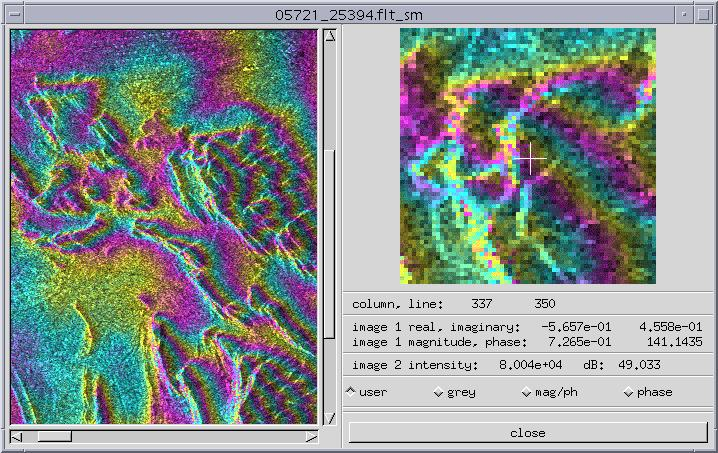

Screen display programs based on GTK (DISP/src)
Raster file generation programs (DISP/src)
Vector and XML file generation programs (DISP/src)
Application of DISP programs to Gamma Data Products
The Display software consists of programs for screen display of data files produced by the gamma software based upon the GTK toolkit (http://www.gtk.org), programs for generating raster images in the SUN raster or BMP format, vector and XML format, and utility programs for working with images and data.
The screen display and raster generation programs are parallel in terms of functionality. For example the program for screen display of detected intensity images is called dispwr, while the program for generation of a raster images of the same data set is called raspwr. The raster images can be displayed using either the disras program that is part of the DISP package or other image file viewer such as xv or Photoshop.
The directory tree for the software in the DISP is as follows:
./DISP main directory
./DISP/bin executables for DISP package./DISP/lib
./DISP/src ANSI C source files for DISP package
./DISP/html HTML documentation
The following files give information on the structure and
installation of the DISP:
./DISP/README_DISP
./DISP/CHANGES_DISP change log for programs in the DISP
Screen display programs in the DISP are based upon the GTK libraries for creation of graphic user interfaces. These programs are all command line driven. To see the parameters need for display of a particular type of file, simply type the program name on the command line. A listing of the parameter names will be printed out as shown below for the program dismph:
*** DISP dismph: display of magnitude/phase of complex image *** *** Copyright 2012, Gamma Remote Sensing, v1.4 23-Sep-2012 clw ***
usage: dismph <cpx> <width> [start] [nlines] [scale] [exp] [data_type]
| input parameters: | |
| cpx | (input) complex data (FCOMPLEX or SCOMPLEX format) |
| width | complex samples per line |
| start | starting line to display (default=1)) |
| nlines | number of lines to display (default=0: to end of file) |
| scale | display scale factor (default=1.0) |
| exp | display exponent (default=.35) |
| data_type | input data type (default=0) 0: FCOMPLEX (default) 1: SCOMPLEX |
Parameters surrounded with rectangular brackets are optional. The information required for display is the name of the file and the number of samples/row of the image. By default the entire image is displayed, but options are available for the starting line (starting at 1) and the number of lines to display. Images are scaled using a relative linear multiplier and an exponent such that the pixel value displayed on the screen is given by
pixel_DN = relative_scale*sc*(data**exp)
The data value for complex images is the sum of the squares of the real and imaginary components. The absolute scale factor sc is determined from the average intensity of the entire image estimated by summing samples distributed over the image. An exponent of .5 should be chosen if the screen intensity is to be proportional to the magnitude of the complex data. Multilook SAR images are assumed to be proportional to the intensity or power of the backscatter when displayed using programs such as dispwr. Below is a listing of the available display programs.
A number of the display programs are designed to merge the contents of two data files in the display. For example, dismph_pwr combines the intensity of one file with the phase from another. The data are packed such that there are 4 bits of phase information and 4 bits of intensity information for each pixel on the display screen. This program is particularly useful when looking at interferograms, where the intensity derived from one of the SAR images and the phase from the complex interferogram.
Relevant phase unwrapping information is stored in a so called flag file containing one byte per interferogram sample. This byte contains information on residues, cuts, tree branches, the progress of the unwrapping etc. There are programs (disflag, distree) that display phase unwrapping flag files.
| Program | Screen Display Function |
|---|---|
| dis2SLC | 2 complex images, flip between images (intensity only display). Supports both short integer complex and floating point complex data, flip between images for rapid comparison. |
| dis2byte | 2 unsigned byte/sample image files, grey scale intensity display, flip between images for rapid comparison |
| dis2cc | 2 correlation files, color display of correlation, flip between images |
| dis2hgt | 2 DEM height files, height displayed as a periodic color cycle, flip between images |
| dis2mph | 2 complex files as magnitude/phase (flip between images) intensity and phase coded as a periodic color cycle |
| dis2pwr | 2 intensity files, grey scale intensity display, flip between images. Supports both short integer or floating point data |
| dis2ras | 2 SUN or BMP raster format image files, flip between images |
| dis2rmg | 2 unwrapped phase files, intensity display + phase (color), flip between images |
| disSLC | SLC data, supports both short integer complex (ESA format) and floating point complex formats, intensity display with grey scale |
| dis_dB | real valued data displayed using logarithmic scaling with grey scale, dynamic range can be specified as minimum and maximum dB values |
| dis_linear | real valued data displayed using linear scaling with grey scale, dynamic range can be set as minimum and maximum (minimum value can be negative) |
| disbyte | unsigned byte data with scaling (default scale factor = 1.0) such that pixel_DN = scale*data |
| discc | interferometric correlation in color combined with the the image intensity |
| disdem_par | DEM displayed in shaded relief, cursor position easting/northing and latitude, longitude, easting, and northing are calculated |
| disdt_pwr24 | display deformation or height (float format using a background grayscale image similar to rasdt_pwr24 (24 bit display) |
| disflag | phase unwrapping flags (residues, cuts, neutrons, low SNR, unwrapped regions) in various combinations |
| dishgt | DEM heights and image intensity, height displayed with a periodic color cycle |
| dismph | floating point complex (FCOMPLEX) or short integer complex (SCOMPLEX) data displayed using intensity and phase represented by a periodic color cycle |
| dismph_pk | display of magnitude/phase of complex image (FCOMPLEX or SCOMPLEX), scale relative to the peak value |
| dismph_fft | displays short integer complex or floating point complex images using intensity and phase represented by a periodic color cycle. A second window displays the 2D FFT of window selected using the cursor to locate the window center. |
| dismph_pwr | merged display of complex phase (color) and image intensity from a second file |
| dismph_pwr24 | display fcomplex file using a background grayscale image, similar to rasmph_pwr24 (24 bit display) |
| dismph_ub | Display complex byte format (IQ) SAR raw data as magnitude and phase |
| dispwr | intensity images displayed using grey scale, supports floating point or unsigned short integer formats |
| disras | raster images (8 or 24 bits/pixel) in Sun raster or BMP format |
| disras_dem_par | raster images (8 or 24 bits/pixel) in Sun raster or BMP format. DEM parameters used to determine cursor latitude, longitude, easting, and northing |
| disrmg | merged display of unwrapped phase displayed as a perodic color cycle and image intensity from a second file |
| disshd | DEM heights displayed as a shaded relief grey scale |
| distree | phase unwrapping flags, unwrapped phase and phase unwrapping tree structure and flags |
| gcp_ras | display and enter ground control points using a Sun raster or BMP format image |
| polyras | display SUN raster or BMP image and select polygonal regions for classification applications |
| tree_edit | display phase unwrapping flag file and SUN raster or BMP image and edit phase unwrapping cuts, neutrons, and low SNR regions |
The display program pops up as a single window as shown in the figure below. In this example, the program dismph_pwr was used to display a backscatter image combined with the phase of a complex interferogram. The intensity of the image is from the backscatter file and the colors are proportional to phase. The color cycle is periodic just as the phase is periodic, covering the range 0 to 2PI (or equivalently from 0 to 360.0 degrees), such that a phase of 0 (0 degrees) has the same color as a phase of 2PI (360 degrees). Unwrapped phase images and DEM data can also be displayed using a similar scheme. In these cases one cycle of the color wheel is equivalent to a height or phase increment that can be specified by the user on the command line.

This screen shot shows the basic elements of the display programs. There is an image display window, a zoom window, zoom window position, data values at the zoom window center, and color table selection radio bar. Clicking with the left mouse button within the main image window will cause a zoomed version to appear in the zoom window at right. Holding the left button while moving will cause the zoom window display to track the cursor.
Color tables are selected by clicking the desired radio button. Options included the default color table for the image (user), 4 or 8-bit grayscale (grey, lower 4 bits), mag/phase (4 bits intensity, 4 bits color), and phase only (upper 4 bits). The user color table button selects the color table supplied with image. The last two color tables are specifically for looking at images that are coded as 4 bits intensity and 4 bits phase such as complex data in the program dismph. Clicking the center mouse button will switch color tables between the magnitude/phase and phase color tables on the radio button bar.
For a number of data types there are programs to display two images simultaneously: dis2SLC, dis2cc, dis2hgt, dis2mph, dis2pwr, dis2ras, and dis2rmg. For these programs, clicking the center button will rapidly flip between the images. When the user clicks the left mouse button, data values from both files are extracted from the original files and printed out in the display. Finally, typing the letter "q" (for quit) on the keyboard will immediately exit any of the display programs with the exception of gcp_ras.
| Program | Function |
|---|---|
| rasSLC | intensity of complex valued SAR data (fcomplex or scomplex) |
| ras8_color_scale | generate color scale for 8-bit rasterfile generated with program ras8_float |
| ras8_float | generate 8-bit raster file from one or two float images with user defined scaling and color model |
| ras24_float | generate 24-bit raster file from three float images (RGB, HLS, or HSV color model) |
| ras_dB | intensity (float) using logarithmic dB scaling |
| ras_linear | intensity (float) using linear scaling |
| rasbyte | unsigned byte data (uchar) using linear scaling (pixel_DN = scale*data) |
| rascc | correlation coefficient (float, linear scaling, -> color) and intensity (float, power-law scaling, -> brightness) |
| rashgt | height (float, linear scaling, -> color) and intensity (float, power-law scaling, -> brightness) |
| ras_cpt | generate raster image of float data using a color map file |
| rasdt_pwr24 | 24-bit SUN/BMP raster file of float parameter (e.g. deformation) + intensity image |
| rashgt_shd | height-1 (float, linear scaling, -> color) and height-2 (float, shaded relief, -> brightness) |
| rasmph | phase (color) and magnitude (brightness) of FCOMPLEX or SCOMPLEX data (fcomplex) |
| rasmph_pwr | 8-bit SUN/BMP raster file of complex magnitude +
intensity image Optional: greyscale display of regions with correlation below a specified threshold |
| rasmph_pwr24 | 24-bit SUN/BMP raster file of complex magnitude + intensity image |
| raspwr | intensity (float or short, power-law scaling, -> brightness) |
| ras3pwr | generate 24-bit RGB raster image of 3 intensity files (float format) |
| rasrmg | phase (color) of unwrapped phase data (float) and
intensity (float, power-law scaling, -> brightness) optional: greyscale display of regions with correlation below a specified threshold |
| rasshd | shaded relief map generated from height data file (float) |
| rastree | combined display of unwrapped phase (float), phase from interferogram (fcomplex), and phase unwrapping tree structure and flags |
The raster file generation programs (ras*) generate raster image files in either Sun raster or BMP format. By default SUN raster images are produced. BMP format images are produced by giving an output file name with the bmp extension (e.g. power1.bmp) and Sun raster images by the ras extension (e.g. power1.ras). If no name is given then a default output file name is created with the ras extension combined with the input file name. The command line options for each of the raster programs can be viewed by typing the name of the program and hitting return:
*** DISP raspwr: generate rasterfile of
intensity image using power-law scale ***
*** Copyright 2000, Gamma Remote Sensing, v2.1 15-Jun-2000 clw
***
usage: raspwr <pwr> <width> [start] [nlines] [pixavr]
[pixavaz] [scale] [exp] [LR] [rasf] [format] [hdrsz]
input parameters: |
|
image |
intensity image (float) |
width |
samples per row |
start |
starting line to display (default=1) |
nlines |
number lines to display (default=0: to end of
file) |
pixavr |
number of pixels to average in range
(default=1) |
pixavaz |
number of pixels to average in azimuth
(default=1) |
scale |
scale display factor (default=1.0) |
exp |
display exponent (default=.35) |
LR |
left/right mirror image flag, (1: normal
(default), -1: mirror image) |
rasf |
(output) image filename, enter - for default,
extension determines the format: |
format |
input data type (default=0) |
hdrsz |
line header size in bytes (default=0, ESA PAF for
PRI products=12) |
The parameters are very similar with the analogous screen display programs with the exception of the pixavr and pixavaz parameters that allow averaging of the image data prior to detection, scaling and display. The extension of the output file (*.ras, or *.bmp) determines the format. The program will not accept any other extension.
| Program | Function |
|---|---|
| kml_map | creates kml file for data visualisation in Google Earth |
| kml_pt | creates kml file for ascii table data (e.g. from IPTA) visualization in Google Earth |
| replace_values | Replace value(s) of input data file with indicated value or values extracted from a second input data file (float) |
| svg_arrow | compute arrows and draw over an image and store as svg file |
| svg_map | creates map with scales of an image in svg format |
| svg_poly | draw polygons over an image and store as svg file |
There are several utility programs for changing the format of
data and for extraction of data from a larger data set.
ascii2float and
float2ascii are programs
for conversion of text format numerical data to floating point
format and back.
The program cp_data is used to extract a segment of file in any data format. This program is byte oriented so that the user must know the number of bytes/line. Complex data has 8 bytes per sample, floating point data 4, integer 4, and short integer 2.
The program swap_bytes is used to change the
byte order between little endian and big endian data with 2, 4,
and 8 bytes per sample.
Programs real_to_cpx
and cpx_to_real are used
to manipulate complex valued data and extra the real part,
imaginary part, amplitude, and phase.
Use the programs data2geotiff and data2tiff to convert the Gamma image
data files to TIFF format. The geotiff format can be read using
programs in the Geospatial Data Abstraction Library (GDAL)
www.gdal.org.
The program flip is used to flip binary data (float, fcomplex, scomplex, uchar, and short) left/right and top/down.
The programs set_value and get_value are used for the reading
and modifying values in the Gamma keyword:value parameter
files.
| Program | Utility Program Function |
|---|---|
| ascii2float |
Convert text format data
to float format |
| cp_data | Copy a segment of one file into another |
| cpd | Copy segments of FLOAT, FCOMPLEX and SCOMPLEX data files |
| cpx_math | Perform arithmetic operations on data files (fcomplex) |
| cpx_to_real | Convert complex data type to real |
| data2tiff | Export real and complex raster or image data into tiff format |
| data2geotiff | Export real and complex raster or image data into GeoTIFF format |
| fill | Fill gaps in data file 1 with values from data file 2 |
| flip | Flip binary data (float, fcomplex, scomplex, uchar, and short) right/left, top/bottom or both |
| float2ascii |
Convert float format data
to text format |
| float_math | Perform arithmetic operations on data files (float) |
| get_value | Extract value from a keyword:value based parameter file |
| real_to_cpx | Convert 2 real data sets into a single fcomplex format file. The input data can be interpreted as either real and imaginary parts or as magnitude and phase. |
| set_value | Set new value in a keyword based parameter file |
| swap_bytes | Swap byte-order for binary data files |
The DISP programs for screen display and raster file generation are quite general and can also support the display of data files not made by Gamma processing software. The main purpose of these programs is, however, to support the visualization of image data processed with Gamma Software. A list describing which DISP programs are applicable for the different data sets is given below:
| File Extension | Data Type | DISP Programs |
|---|---|---|
| raw |
raw SAR data | disbyte, dis2byte, dismph_ub, rasbyte |
| mli, rmli | detected intensity images (both short integer and floating point) | dispwr, dis_dB, dis_linear, dis2pwr, raspwr,ras_dB, ras_linear |
| slc, rslc | single look complex images (SCOMPLEX or FCOMPLEX data type) | disSLC, dis2SLC, rasSLC, dismph_fft, dismph, dismph_pwr |
| int, diff |
complex interferograms and differential
interferograms |
dismph, dis2mph, dismph_fft, rasmph, rasmph_pwr,
dismph_pwr24, rasmph_pwr24 |
| cc | interferometric coherence |
discc, dis2cc, rascc, ras_linear |
| hgt |
terrain height data (DEM) | dishgt, dis2hgt, disshd, rashgt, rashgt, rashgt_shd,
disdt_pwr24, rasdt_pwr24 |
| dem | DEM data in a map projection coordinate system(DEM) | disdem_par |
| unw | unwrapped phase | disrmg, dis2rmg, rasrmg, distree, rastree, disdt_pwr24 |
| flag | branch cut phase unwrapping flags | disflag, distree, rastree,tree_edit |
| ras, bmp | SUN or BMP format both 8 and 24 bits/sample | disras, dis2ras, polyras, gcp_ras |
| ras, bmp | SUN or BMP format both 8 and 24 bits/sample in a map projection coordinate system. | disras_dem_par |
| kml | kml (Keyhole Markup Language) file, data for display in Google Earth | kml_map |
| svg | svg Scalable Vectors Graphic file | svg_arrow, svg_map, svg_poly |